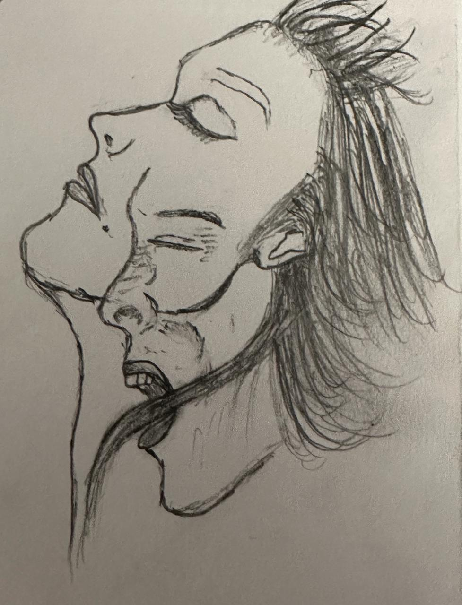
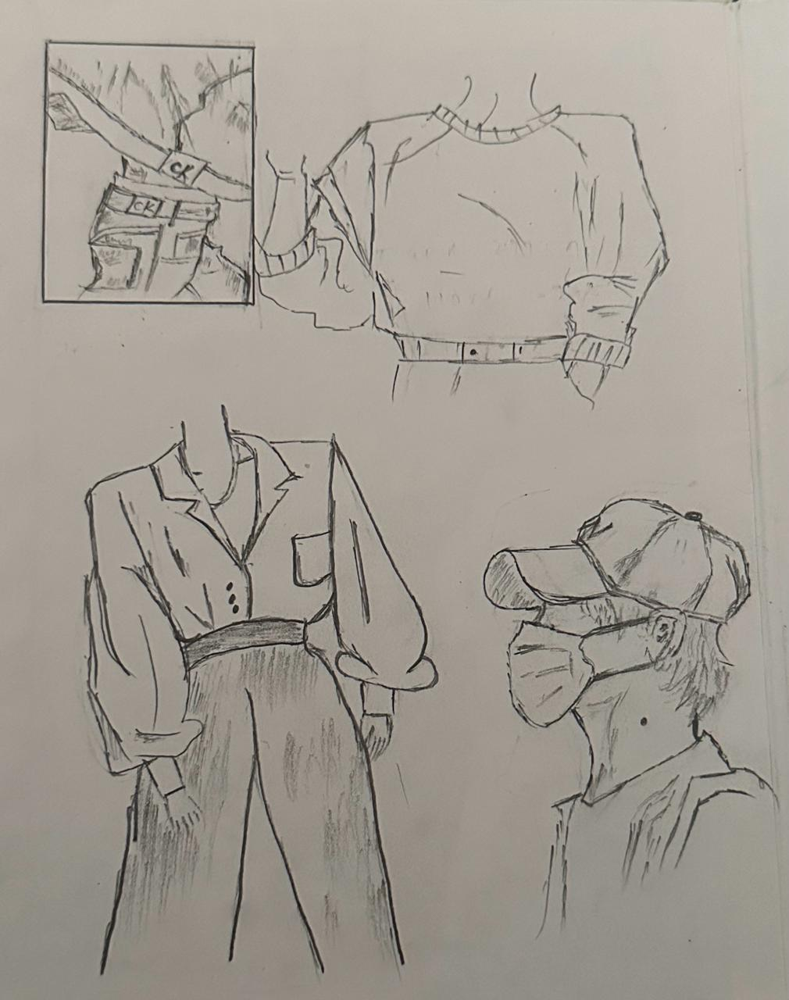
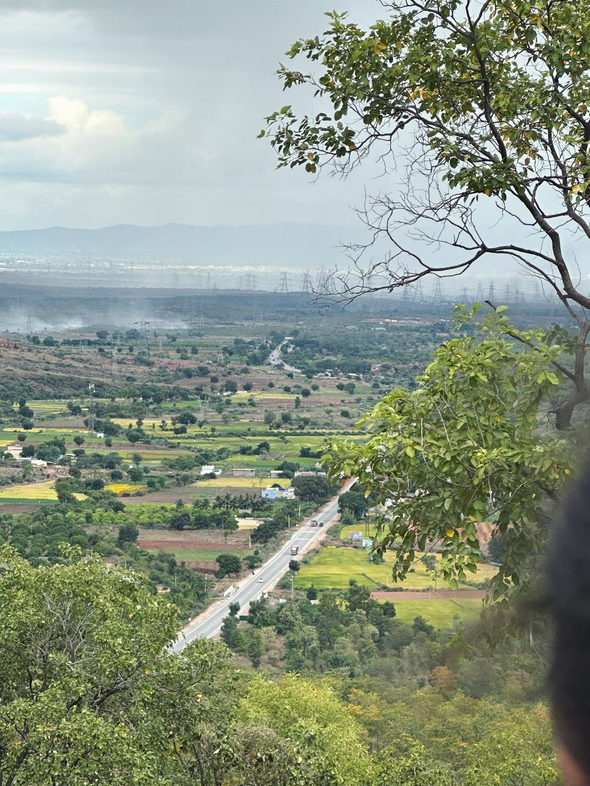
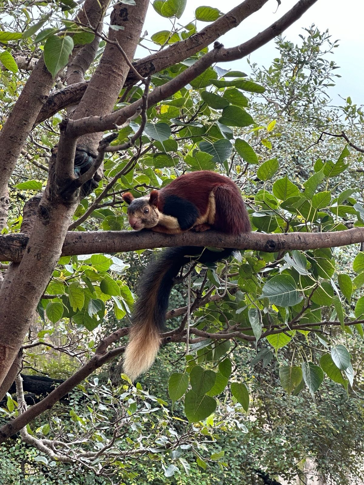
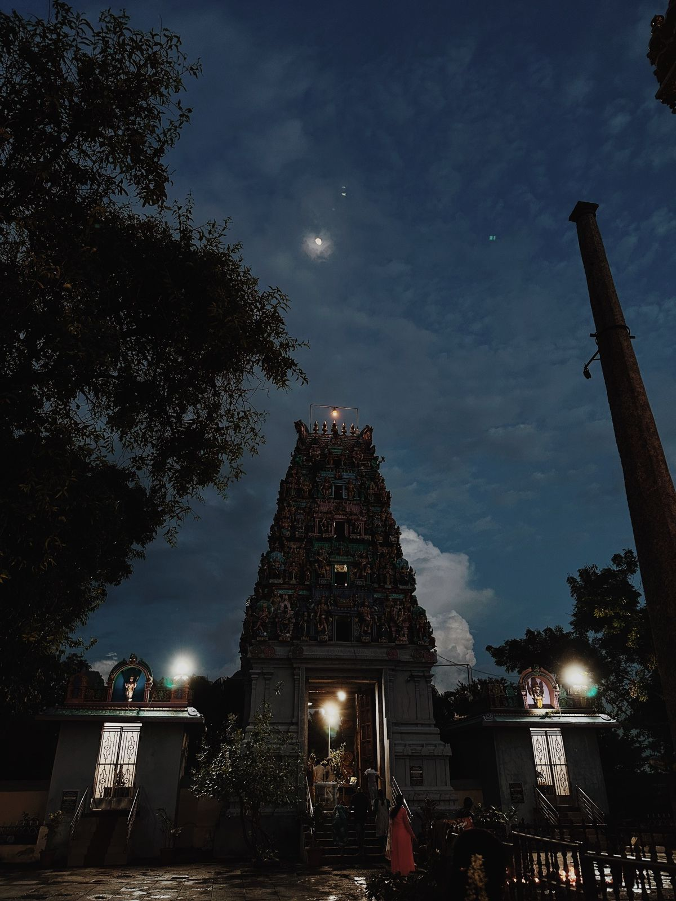

About Me
Keerthi Sree
Hi,I'm Keerthi Sree.
In the whirlwind of our fast-paced lives, I've discovered a sanctuary where time seems to slow down, and the world fades away.
This haven is composed of simple pleasures that bring me immeasurable joy. Join me on this journey as I navigate through the
rhythm of life, finding solace in the melodies that soothe my soul, the strokes of a pencil that create my personal masterpiece,
and the ethereal beauty painted across the sky during twilight.
Musical Escapes
As the chaos of the day unfolds, I find refuge in the world of music. The seamless fusion of melodies creates a soundtrack
for my moments of solitude.From the soulful tunes of acoustic guitars to the rhythmic beats that synchronize with my
heartbeat, each note is a gateway to serenity. It's in these musical escapes that I rediscover the harmony within myself.
The Art of Sketching


In the stillness of creative expression, I find my peace. Sketching, to me, is not just lines on paper but a conversation between my emotions and the strokes of a pencil. Whether it's capturing the intricate details of everyday life or letting my imagination run wild on a blank canvas, the act of sketching is a therapeutic dance that brings tranquility to my being
Nature's Beauty



Amid the concrete jungle, I've learned to appreciate the raw beauty that nature generously offers. The way the sun gracefully bids adieu, painting the sky in hues of warmth, or the moon casting its gentle glow on a silent night — these moments are my rendezvous with the sublime. Nature's beauty, a silent poet, narrates stories that transcend the chaos of our daily lives, reminding me to pause and marvel at the wonders around us.